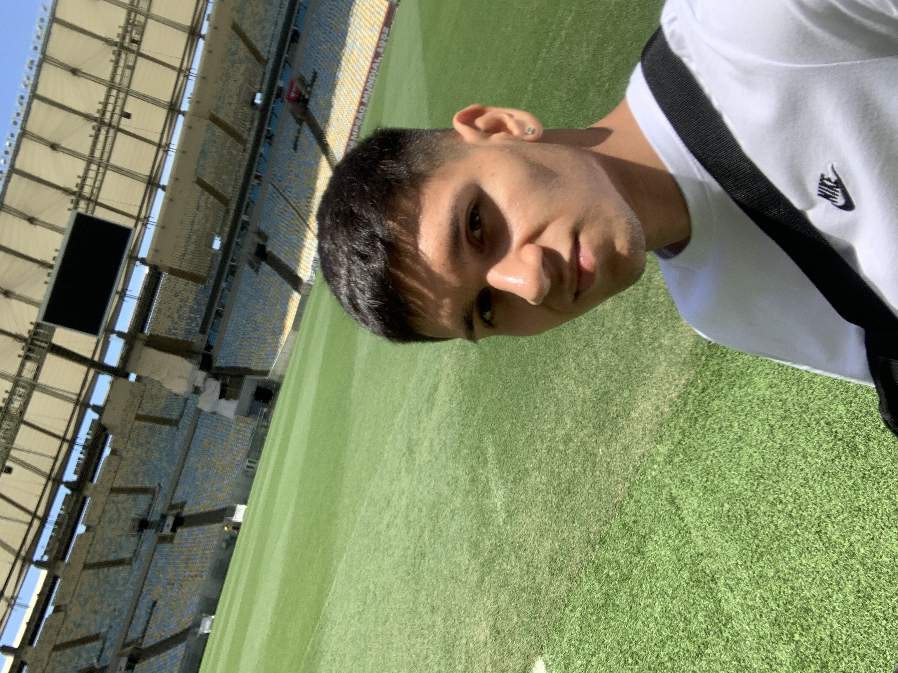

Curriculum vitae Vicente Rodríguez

Información personal
- Nombre completo: Vicente Gabriel Rodríguez Esparza
- Edad: 21 años
- Domicilio: Puente Alto, Región Metropolitana
Educación y experiencia laboral
- 2021-Presente: Pontificia Universidad Católica: estudiante comunicación social
- 2008-2020: Colegio Patrona de Lourdes, La Florida
- 2021-2022: Producción de contenidos en redes sociales de La Arenga del Abuelo
Fortalezas
- Trabajo organizado
- Orden y responsabilidad en las tareas
- Trabajo en equipo
- Escucha activa
CONTACTO